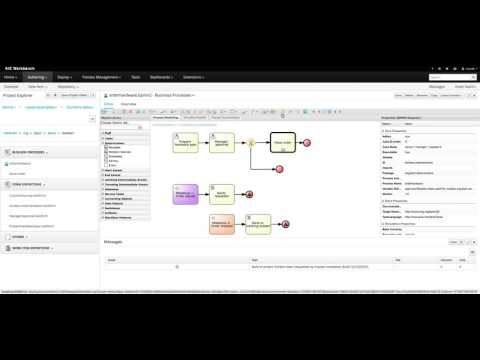
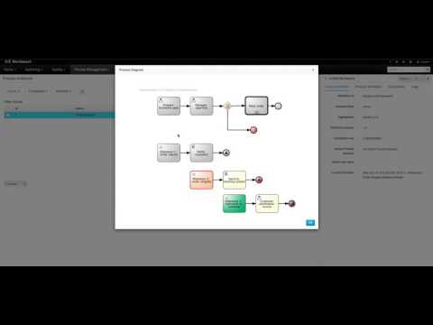

Case management – jBPM v7 – Part 2 – working with case data
In Part 1, basic concepts around case management brought by jBPM 7 were introduced. It was a basic example (it order handling) as it was limited to just moving through case activities and basic data to satisfy milestone conditions.
In this article, case file will be described in more details and how it can be used from within a case and process. So let’s start with quick recap of variables available in processes.
There are several levels where variables can be defined:
- process level – process variable
- subprocess level – subprocess variable
- task level – task variable
Obviously the process level is the entry point where all other take the variables from. Meaning if a process instance creates subprocess it will usually include mapping from process level to subprocess level. Similar for tasks, tasks will get variables from process level.
In such case it means the variable is copied to ensure isolation for each level. That is, in most of the cases, the desired behavior unless you need to keep all variables always up to date, regardless of the level they are in. That, in turn, is usual situation in case management which expects always the most up to date variables at any time in the case instance, regardless of their level.
So that’s why case management in jBPM is equipped with Case File, which is then only one for entire case, regardless how many process instances compose the case instance. Storing data in case file promotes reuse instead of copy, so each process instance can take variable directly from case file and same for updates. There is no need to copy variable around, simply refer to it from your process instance.
Support for case file data is provided at design time by marking given variable as case file
as can be seen in the above screenshot, there is variable hwSpec marked as case file variable. And the other (approved) is process variable. That means hwSpec will be available to all processes within a case, and moreover it will be accessible directly from a case file even without process instance involvement.
Next, case variables can be used in data input and output mapping
case file variables are prefixed with caseFile_ so the engine can properly handle it. Though a simplified version (without the prefix) is expected to work as well. Though for clarity and readability it’s recommended to always use the prefix.
Extended order hardware example
In part 1, there was a very basic, with no data case definition for handling order of IT hardware. In this article we extend the example to illustrate:
- use of case file variables
- use of documents
- share of the information between process instances via case file
- use business process (via call activity) to handle placing order activity
Following screencast shows entire design time activities to extend the part 1 example, including awesome feature to copy entire project!

So what was done here:
- create new business process – place-order that will be responsible for placing order activity instead of script task from previous example
- define case file variables:
- hwSpec – which is a physical document that needs to be uploaded
- ordered – which is indication for Milestone 1 to be achieved
- replace script task for Place order activity with reusable subprocess – important to note is that there are no variables mapping in place, all is directly taken from case file
- generate forms to handle file upload and slightly adjust their look
With these few simple steps our case definition is enhanced with quite a bit of new features making it’s applicability much better. It’s quite common to include files/documents in a case, though they should be still available even if given process instance that uploaded them is gone. And that’s provided by case file that is there as long as case instance was not destroyed.
Let’s now run the example to see it in action

The execution is similar as it was in part one, meaning to start the case we need to use REST api. A worth noting part here is that we made a new version of the project:
- org.jbpm.demo
- itorders
- 2.0
and then it was deployed on top of the first version, in exact same kie server. Even though there are both versions running the URL to start the case didn’t change:
Endpoint::
http://host:port/kie-server/services/rest/server/containers/itorders/cases/itorders.orderhardware/instances
where
- itorders is the container alias that was deployed to KIE Server
- itorders.orderhardware is case definition id
Method: POST
As described above, at the time when new case is started it should provide basic configuration – role assignments:
POST body::
{
“case-data” : { },
“case-user-assignments” : {
“owner” : “maciek”,
“manager” : “maciek”
},
“case-group-assignments” : {
“supplier” : “IT”
}
}
itorders is an alias that when used will always select the latest version of the project. Though if there is a need to explicitly pick given version then simply replace the alias with the container id (itorders_2.0 or itorders_1.0)
Once the process is started supplier (based on role assignment – IT group) will have task to complete to provide hardware specification – upload a document. Then manager can review the specification and approve (or not) the order. Then it goes to subprocess to actually handle the ordering, which once done will store status into case file which will then trigger milestone 1.
Throughout all these user oriented activities, case file information (hwSpec) is shared without any need to copy that around. Moreover, there was no need to configure anything to handle documents either, that is all done by creating a case project that by default sets up everything that is needed.
At any time (as long as case was not destroyed) you can get the case file to view the data. This can be retrieved by following endpoint
Endpoint::
http://host:port/kie-server/services/rest/server/containers/itorders/cases/instances/IT-0000000001/caseFile
where:
- itorders – is the container alias
- IT-0000000001 – is the case ID
Method: GET
With this, part 1 concludes with a note that since it is bit enhanced order hardware case, it’s certainly not all that you can do with it so stay tuned for more :)
Try it yourself
As usual, complete source code is located in github.

{kind=link}
{kind=link}
{kind=link}